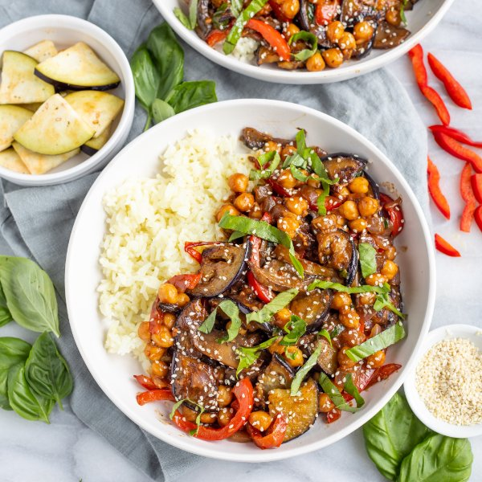

Asian Chickpea, Eggplant, Pepper, Mushroom & Basil Stir-Fry with Rice

Total Time
35 min
Nutrition (per serving)
703 kcalCalories
23 gProtein
103.4 gCarbs
24.9 gFat
Full nutrition table
| Calories | 703 kcal |
| Total fat | 24.9 g |
| Saturated fat | 3.4 g |
| Trans fat | 0 g |
| Cholesterol | 0 mg |
| Sodium | 294.1 mg |
| Carbohydrates | 103.4 g |
| Fiber | 22.7 g |
| Sugars | 17.9 g |
| Protein | 23 g |
| Potassium | 1575 mg |
| Calcium | 148.9 mg |
| Iron | 5.6 mg |
| Vitamin A | 109.6 IU |
| Vitamin C | 86.7 mg |
| Vitamin D | 8.4 IU |
Cookware
Ingredients
- 2eggplants
- 1 small pkgfresh basil
- 2 (15 oz) cansgarbanzo beans (chickpeas)
- 2 clovesgarlic
- 2 (1 inch) piecesginger root
- 1 cupjasmine rice
- 4 capsportobello mushrooms
- 2red bell peppers
- 1 mediumred onion
- black pepper
- chili-garlic sauce
- cornstarch
- natural peanut butter
- pure maple syrup
- rice vinegar
- sesame seeds
- soy sauce
- toasted sesame oil
Steps
- Using a strainer or colander, rinse the rice under cold, running water, then drain and transfer to a medium saucepan. Add water and bring the mixture to a boil over high heat.1 cup jasmine rice
2 cup water - Once the liquid comes to a boil, stir the mixture, cover the saucepan, and reduce heat to low. Cook rice until liquid is fully absorbed, 15-18 minutes. Once done, remove rice from the heat and let it stand, still covered, for 5 minutes.
- Meanwhile, wash and dry the fresh produce.2 eggplants
2 red bell peppers
4 caps portobello mushrooms
2 (1 inch) pieces ginger root
1 small pkg fresh basil - Preheat a large skillet over medium-high heat.
- While the skillet heats up, trim and quarter the eggplants lengthwise, then cut crosswise into ¼-inch thick pieces.
- Once the skillet is hot, add oil and swirl to coat the bottom. Add eggplant and cook, stirring occasionally, until golden brown, about 10 minutes.2 tbsp toasted sesame oil
- Meanwhile, peel, halve, and medium dice onion; place in a medium bowl.1 medium red onion
- Trim, seed, and slice bell peppers into thin strips. Remove stems from mushrooms, halve, and cut crosswise into thin strips. Add both to the bowl with the onion.
- When the eggplant is done, remove to a plate and set aside. Return skillet to medium-high heat, add more oil, and swirl to coat the bottom.4 tsp toasted sesame oil
- Add onion, bell pepper, and mushrooms to the skillet. Cook, stirring occasionally, until the veggies are almost fork-tender, 5-6 minutes. (Reserve bowl for later use.)
- While the veggies are cooking, drain and rinse the chickpeas in a colander; set aside to drain further.2 (15 oz) cans garbanzo beans (chickpeas)
- Peel and mince ginger and garlic; place in the reserved bowl along with soy sauce, water, peanut butter, maple syrup, cornstarch, vinegar, oil, chili-garlic sauce, and pepper. Whisk to combine the sauce and set aside.2 cloves garlic
⅓ cup soy sauce
¼ cup water
2 tbsp natural peanut butter
4 tsp pure maple syrup
1 tbsp cornstarch
2 tsp rice vinegar
2 tsp toasted sesame oil
1 tsp chili-garlic sauce
½ tsp black pepper - Add chickpeas to the skillet and continue to cook, stirring occasionally, until the veggies are tender and chickpeas are warmed through, 2-3 minutes more.
- Meanwhile, pick basil leaves off the stems, roll up crosswise, and thinly slice into ribbons.
- Add sauce, half of the basil (reserving the rest for garnish), and the cooked eggplant to the skillet. Continue to cook, stirring frequently, until the sauce is thickened and veggies are coated, 1-2 minutes.
- To serve, divide rice and stir-fry between plates; sprinkle with sesame seeds and reserved basil. Enjoy!4 tsp sesame seeds